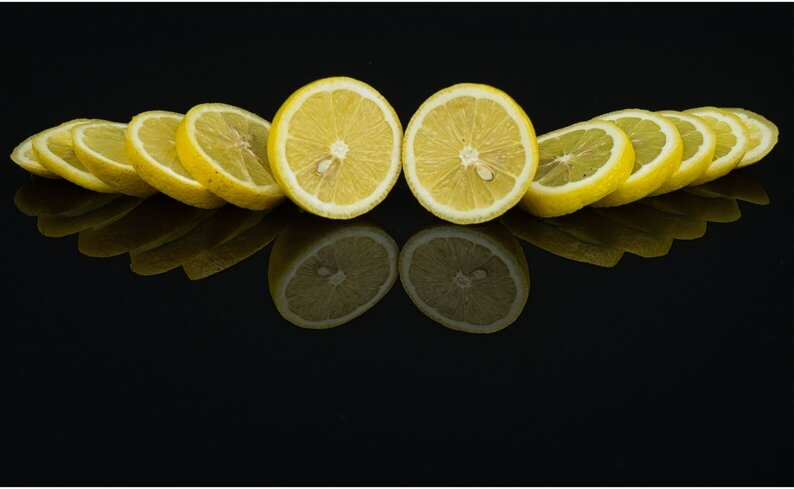

We cultive healthy habits for better life.
Stress is one of the most dangerous illnesses that we can have in our days, lemons has the biggest vitamin that help us to control that stress, for example after the long journey in the job if you bring a lot of stress, the next day on an empty stomach you can drink lemon juice and that can recover you from that stress, and there's a lot of tips like that that you can find here in this website.
Most of the fruits had vitamins for our mental health or our body, in lemons and love you will find a lot of information about how you can improve better health with lemon and good rutines and diet. Also it is a forum where you can share your ideas and creations with all the people around the world. During this last years we saw the difficult times attack us in our health and also our economy, must of the population around the world lost their job as a result of Covid-19 and this website is for giving more opportunities both financially and in health.